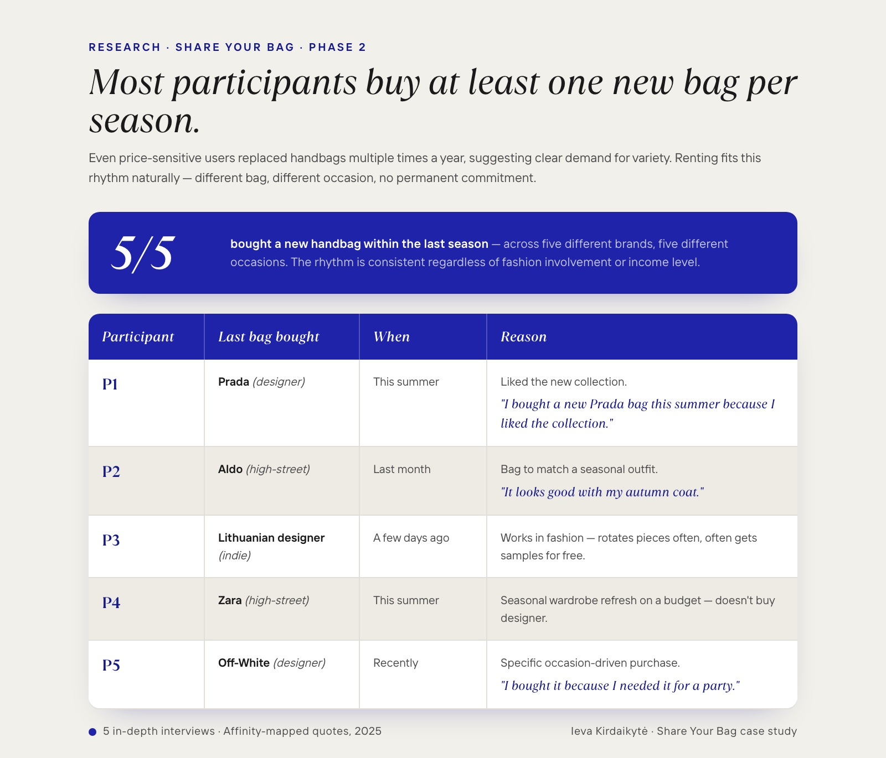
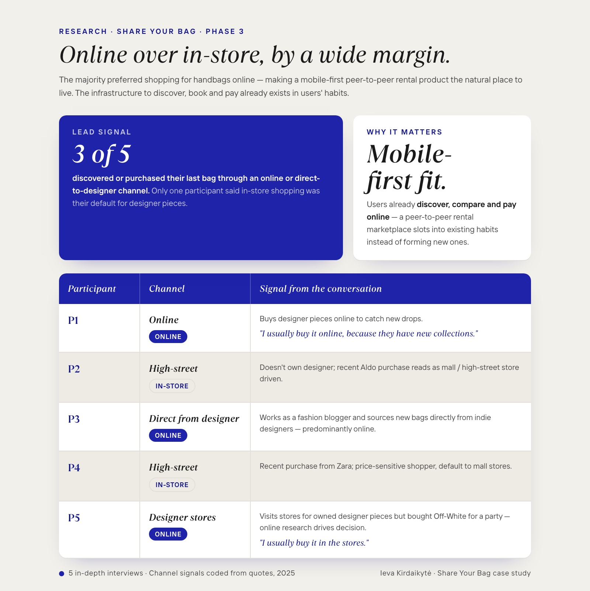
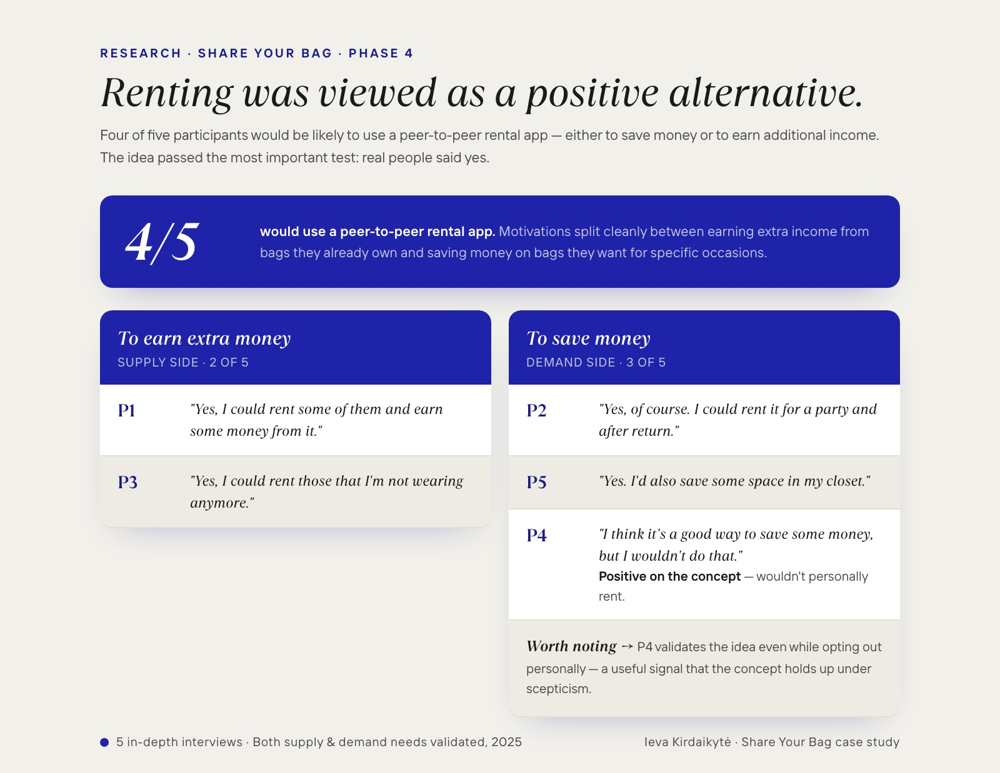
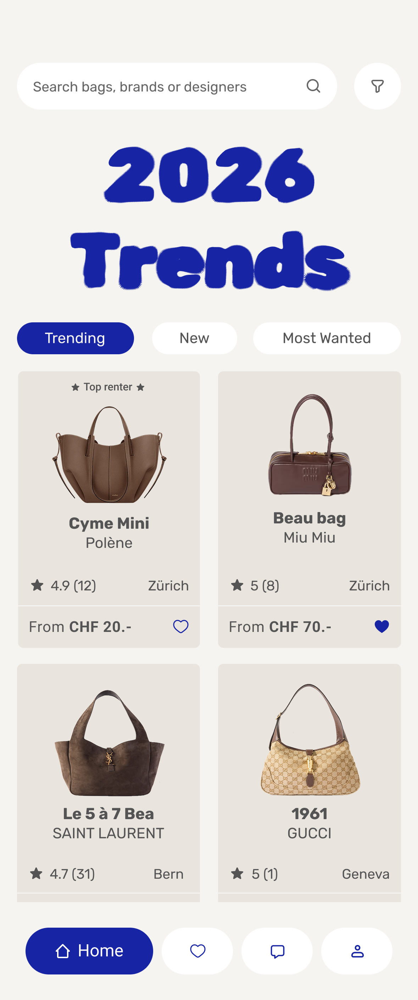
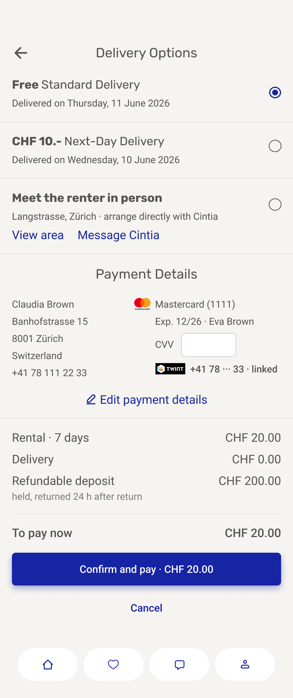
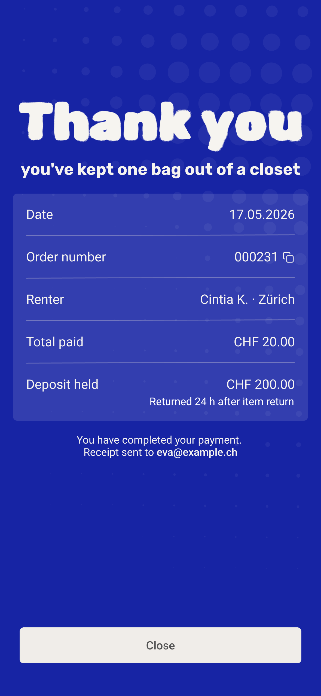

Share Your Bag
Revisiting my first UX project five years later, with a product mindset and a designer's eye that has grown up.

The idea was strong then. With more experience, I wanted to design it properly.
This project began in 2021 as my first UX case study. Five years later, with significantly more experience and a sharper design perspective, I felt compelled to return to it, not because it was broken, but because the core idea still felt strong.
Revisiting let me rethink every decision through the lens of what I know now: research depth, usability, accessibility, visual hierarchy. The redesign reflects both my growth as a designer and my belief in the long-term potential of the product. It's a concept I would genuinely love to bring to life one day.
Designer handbags are aspirational, expensive, and underused.
The luxury handbag market offers endless variety, yet access stays limited to a small audience. Prices have risen dramatically; bags have become status symbols rather than everyday items.
At the same time, many designer bags sit unused in closets for most of the year. Wasted value, missed opportunity, and currently no easy, trust-focused way for individuals to rent these items from each other safely.
A peer-to-peer marketplace built around trust, transparency, and short-term access.
Users rent and lend designer handbags directly. Clear pricing, verified users, and an intuitive booking flow make the experience feel as polished as the product itself.
Luxury becomes accessible for short-term moments: birthdays, weddings, weekends. Owners earn from items they already have. The platform makes the exchange safe enough to actually happen.
Four pillars guiding every decision.
Trust, surfaced everywhere.
Verification, ratings, transparent profiles, deposit and return logic, every screen treats trust as a feature, not a footer link.
Simplified rental journey.
From discovery to return in as few steps as possible. Bookings, pickups, returns, each treated as one designed moment, not a leftover from e-commerce.
Polished, luxury-inspired interface, without intimidation.
The product is luxury. The product experience should feel approachable. Quiet typography, generous space, and warmth in the details.
Accessibility from the first frame.
Contrast, type sizes, focus states, motion-safe defaults, designed in from the start rather than retrofitted at the end.
Price is the wall. Desire isn't the problem.
Qualitative interviews with five participants on brand awareness, purchase habits, and attitudes toward ownership versus access. High prices were the primary reason users avoided buying designer handbags, not lack of interest, just unwillingness to commit thousands of euros to one item.
Most participants buy at least one new bag per season.
Even price-sensitive users replaced handbags multiple times a year, suggesting clear demand for variety. Renting fits this rhythm naturally, different bag, different occasion, no permanent commitment.
Online over in-store, by a wide margin.
The majority preferred shopping for handbags online, making a mobile-first peer-to-peer rental product the natural place to live. The infrastructure to discover, book, and pay already exists in users' habits.
Renting was viewed as a positive alternative.
Four of five participants would be likely to use a peer-to-peer rental app, either to save money or to earn additional income. The idea passed the most important test: real people said yes.










What revisiting this project taught me about my own growth.
Consistency and visibility build user confidence, the rest follows.
The 2021 version had good ideas in inconsistent containers. The 2026 version has the same ideas in a system that holds them up. The work between those two versions is the work of becoming a designer.
Strong concepts deserve to be revisited with a more mature lens.
I avoided this project for years because the original work embarrassed me. Returning to it was the most useful thing I could have done, both for the project and for myself.
Designing systems early prevents downstream usability issues.
Most of the 2021 issues had a single root cause: I was solving screens, not products. A small system upfront would have spared the redesign altogether.
User feedback is sharpest when paired with clear design principles.
Without principles, feedback ping-pongs you between strangers' opinions. With them, feedback becomes input you can prioritise, and the conversation shifts from "what should we do" to "what does this teach us".
If this became a real product, here's what I'd do.
- ValidateTest with a broader set of renters and lenders, different cities, ages, brand preferences.
- Trust & safetyVerification, peer reviews, and insurance, the three pillars that make peer-to-peer luxury actually work.
- Edge casesCancellations, returns, damaged items, fraud, designed before launch, not after the first incident.
- MVPDefine a real-world MVP scope and explore a path toward release.